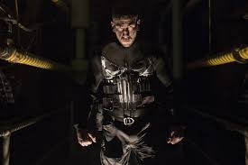

Punisher
Bohater bez nadludzkich umiejętności.
Zdolności
Frank nie posiada żadnych nadludzkich zdolności. Jest wysoce wyszkolonym żołnierzem sił specjalnych, gotowym operować w każdym teatrze działań, od pustyni po dżunglę. Jest ekspertem w dziedzinie broni palnej oraz sprawnie posługuje się materiałami wybuchowymi. Castle przeszedł gruntowe szkolenie w walce wręcz oraz na noże.